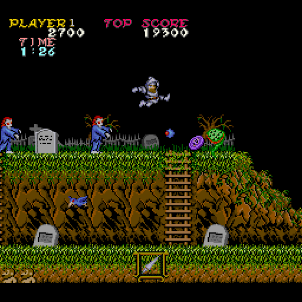
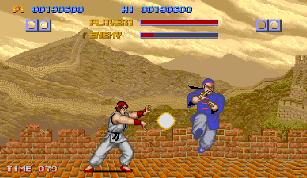
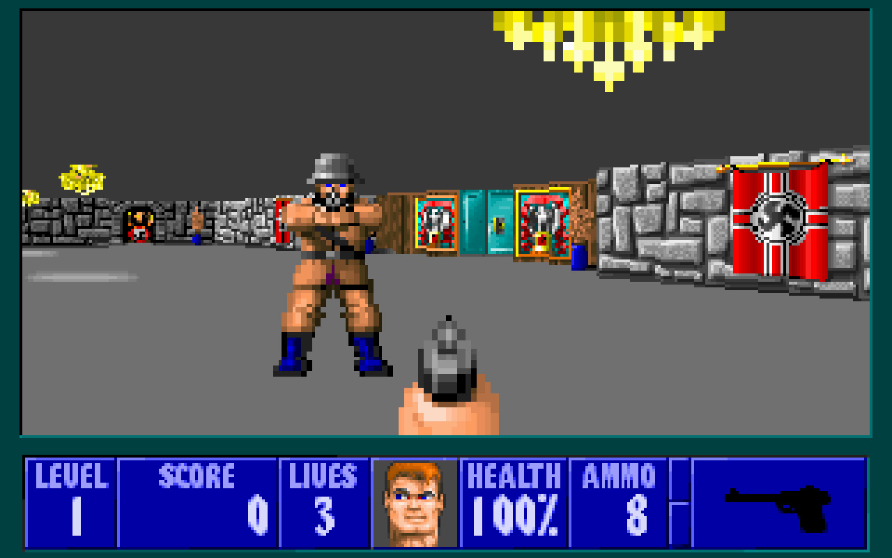
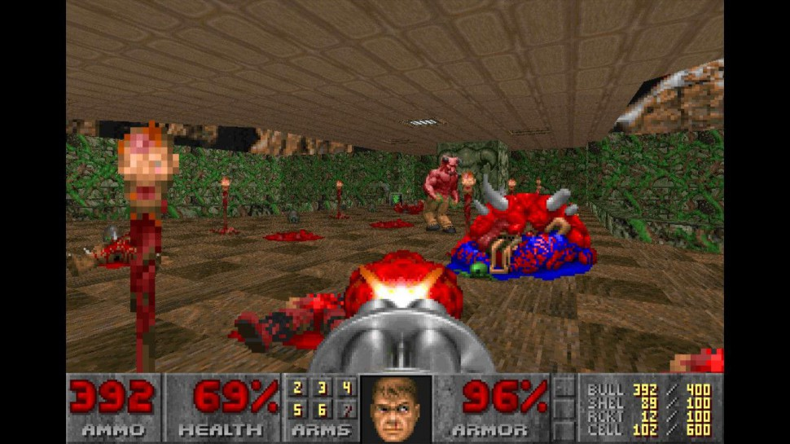
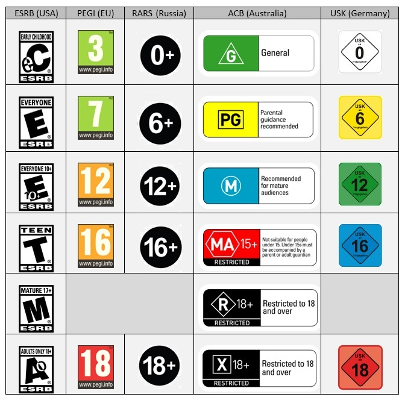

Mentre Nintendo estava creant el seu monopoli i començant a treure els seus primers títols per a la NES, una sèrie de companyies japoneses especialitzades en les màquines recreatives van assaltar el mercat convertint-se en unes de les més importants del mercat.
Entre totes aquestes la més destacada va ser Capcom, creadora de clàssics com Street Fighter, un joc de lluita entre dos jugadors basat en combinacions de botons o Ghosts ‘n Goblins joc de plataformes arcade.
Altres companyies destacades van ser: Konami, Irem, Jaleco, SNK o Sega.
Un joc particularment diferent que tothom ha vist alguna vegada en la seva vida, si ha visitat un lloc amb consoles arcade, era Out run, videojoc en què el jugador s'asseia damunt d'un Ferrari descapotat i conduïa mentre aquest simulava els moviments d'un cotxe real.
Entrant als anys 90 arriben els 16 bits i les aventures gràfiques per a ordinador, l'empresa LucasArts fundada per George Lucas el pare de Star Wars. Va ser junt amb la companyia Sierra on-line el desenvolupador més important d’aquest tipus de videojocs.
El seu primer títol important fou Maniac Mansion, per a el que van desenvolupar un motor i un llenguatge anomenat scumm que també utilitzarien en videojocs posteriors.
LucasArts també va desenvolupar altres aventures gràfiques molt exitoses com: Indiana Jones, LOOM, o la saga de Monkey Island.
Els videojocs d’ordinador també van anar evolucionant, id software una companyia estatunidenca va començar a desenvolupar una sèrie de shooters en primera persona, jocs en el que el personatge va armat i ha de que disparar als seus objectius. Això ho va aconseguir explorant la possibilitat del 3D, fent que els jocs arribessin a un nou nivell tècnic.
Amb això van arribar Wolfenstein 3D i DOOM, dos shooters en primera persona que sentarien les bases d’aquest gènere que el dia d’avui segueix viu amb títols com Call of Duty o Battlefield.
Amb la sortida de DOOM i altres jocs violents van provocar la creació de l’etiqueta ESRB (Entertainment Software Rating Board), l’actual classificació de videojocs per edat segons el seu contingut.
